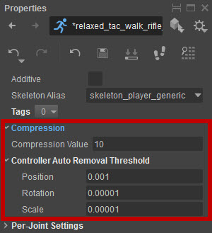
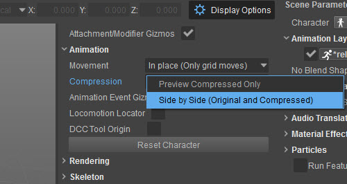
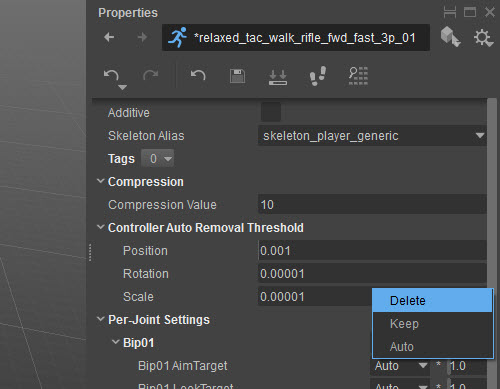
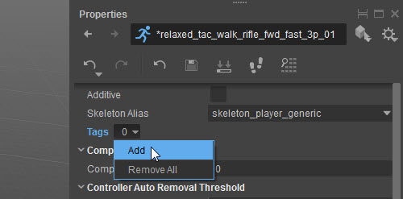
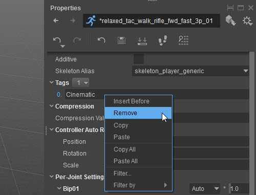
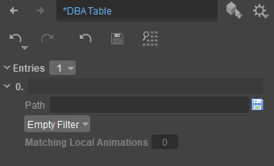

Overview
Ideally, you'll want to have assets that take the lowest amount of memory, but that animate at the highest possible quality.
Uncompressed, an animation contains a key for every frame in the animation and for each joint that has been exported. You'll usually want to reduce the amount of joints and keys to minimize the size. We have separate channels for rotation keys and position keys per joint.
To compress animations for characters we use the Resource Compiler tool (RC).
Compression of Existing Animations
To adjust compression settings of the animation load your character by double-clicking on it in Asset Explorer.
Choose your animation in the Animations tree in Asset Explorer. Note that both .i_caf and *.animsettings should present and writable. (Not inside a *.pak file)
Note for Perforce users: *.i_caf and *.animsettings files should be synced and checked out locally. If they are not, use a perforce client to do so first.

- You can adjust compression settings and instantly see the resulting animation and its size;
- In the display options, set Compression to Side by Side to compare original animation with a compressed version;

- You can remove specific per-joint compression settings via the context menu:

- Click the Save button in the properties panel toolbar, or Save All in the File menu when you're done.
Setting Compression Settings
Removing channels (position/rotation keys) automatically
- You can get huge savings by automatically removing joints that don't contribute to the animation.
- Roughly, for the RC to know if a joint contributes to an animation it finds out how much it moves during the animation and compares it to the provided epsilon values. If it finds that it moves less than what the epsilon specifies it will remove the keys for the joint. Higher values for epsilons will remove more joints.
- The values to tweak for this are Position Epsilon for the position channel and Rotation Epsilon for rotation channel. This means rotation and position keys are considered separately.
- Position Epsilon and Rotation Epsilon are global values for the whole animation.
- Additive animations have smaller movement so you'll need to use smaller values for the epsilons.
- This is an all or nothing process: Either the keys are all kept for a channel(position/orientation), or deleted.
Reducing the amount of keys within a channel
- The previous step has removed joints completely. We now want to reduce the number of keys each channel has, since at this point we have one key per frame.
- For this the RC uses the Compression value. Higher values will remove more keys within a channel.
- The Compression value is a global value so it will affect all joints the same by default (although we can still tweak it later on a per joint detail level).
The goal should be at this point to have an animation that takes as little as possible but looks good. Sometimes though, playing around with global values for a whole animation is not enough, and we will need to fix up individual joints that show choppy motion.
Per-Joint Setup
Per joint control over the epsilons removal process
- For each joint, by default, the epsilon values are used to decide if they are removed or not.
- We can force a joint to be removed by clicking the checkbox next to it. Position and Rotation channels will both be removed for the selected joints.
Per joint control over the compression value
- For each joint we can specify a multiplier that is applied to the Compression value. By default this value is 1, so a joint uses the global Compression value.
Define Animation Tags
Each animation can have a list of tags associated with it. Tags can be used to:
- Select animations that have to go into a specific DBA by means of an Animation Filter (see below)
- Apply compression to a group of animation files by means of Compression Presets (see below)
You can find Tags in the Properties window when you select animation in the Asset Explorer.
To add a new tag use the context button with tag count and select Add in popup menu:

Then click on an empty string to enter its name.
To remove a tag you can use the context menu (RMB on the tag name):

For curious readers: tags are case insensitive. I.e. the tag "CINEMATIC" will be treated the same way as "cinematic".
Batch-compression
Compression Presets can be used to apply the same set of compression rules to multiple animations at once. You can locate them in the Compression section of the Asset Explorer.
Each compression preset entry defines a filter that can match animations according to a certain filter, i.e. a set of criteria such as folder, filename or tags. Such criteria can be combined using logical operations into a complex condition, like "in folder and doesn't contain specific tag but has substring in name". When multiple presets match the same animation only the first one is used. You can always preview which compression setting entry was applied to animation in the animation properties (by selection a specific animation in the asset explorer).
DBA Creation
DBA files are bundles of animations which can be streamed in and out as one. They are typically smaller and take up less memory than individual animations.
DBAs are created using the same filters as compression presets. I.e. you can define a combination of criteria, e.g. location, name or tags to select animations for a specific DBA.
DBA descriptions are saved into: <GameFolder>\Assets\Animations.pak\DBATable.json and used by the RC at build time to create actual DBA files.
The DBA Table can be found in the Compression section of the Asset Explorer.
Define Animation Filter (DBA or Compression Presets)
An Animation Filter allows you to choose a set of animation files for specific DBA or Compression Preset. An Animation Filter is defined as a tree of condition nodes.
These options are displayed in the Scene Parameters when you select Compression -> Compression Presets or Compression -> DBA Table.

Some of them are condition nodes that can be used to group other nodes, like "And" and "Or", the rest are used to check some of the criteria of the animation.
Condition | Description |
|---|---|
Empty Filter | Creates an empty filter. |
And | Succeeds when all of the child conditions succeed. |
Or | Succeeds when at least one of the child conditions succeeds. |
In Folder | Check if animation is located within a specific folder. |
Has Tags | Checks if animation has all of the listed tags. Tags are stored in ANIMSETTINGS and can be set in Animation Properties (see above). |
Contains In Name | Checks for a substring within animation name. |
Contains in Path | Checks for a substring within animation path. |
Skeleton Alias | Checks if animation uses specific Skeleton Alias. Skeleton aliases are defined in the Skeleton Table. |